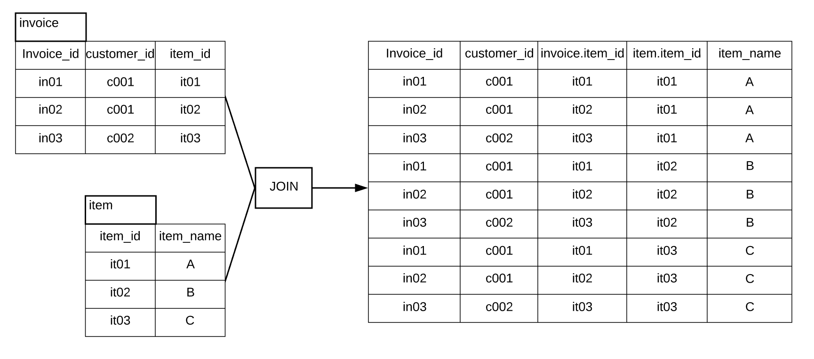

Overview
Teaching: 40 min
Exercises: 10 minQuestions
How do I bring data together from separate tables?
Objectives
Employ joins to combine data from two tables.
Apply functions to manipulate individual values.
Employ aliases to assign new names to tables and columns in a query.
Joins
To combine data from two tables we use the SQL JOIN command, which comes after
the FROM command.
The JOIN command on its own will result in a cross product, where each row in
the first table is paired with each row in the second table. Usually this is not
what is desired when combining two tables with data that is related in some way.
An example of cross product:
Not very helpful right?

For that, we need to tell the computer which columns provide the link between the two
tables using the word ON. What we want is to join the data with the same
item id. Try join the invoice_info and item_info table:
SELECT *
FROM invoice_info
JOIN item_info
ON invoice_info.Item_id = item_info.Item_id;
ON is like WHERE, it filters things out according to a test condition. We use
the table.colname format to tell the manager what column in which table we are
referring to.
The output of the JOIN command will have columns from the first table plus the
columns from the second table. For the above command, you will see two item_id columns.
Alternatively, we can use the word USING, as a short-hand. USING only
works on columns which share the same name. In this case we are
telling the manager that we want to combine invoice_info with item_info and that
the common column is item_id.
SELECT *
FROM invoice_info
JOIN item_info
USING (item_id);
The output will only have one item_id column
We often won’t want all of the fields from both tables, so anywhere we would
have used a field name in a non-join query, we can use table.colname.
For example, what if we wanted only the invoice_id, Item_Description, Bottle_Volume_ml, Bottle_Retail_Price? Sometimes table names are very long, it is handy to give alias to table names.
SELECT inv.Invoice_id, ite.Item_Description, ite.Bottle_Volume_ml, ite.Bottle_Retail_Price
FROM invoice_info AS inv
JOIN item_info AS ite
USING (item_id);
For the remainder of this lesson, we’ll stick with the explicit use of the JOIN keyword for
joining tables in SQL.
Challenge:
- Write a query that returns the Store_id, Store_Name, County_Name and City_Name of every stores
Different join types
There are few types of joins:
In your future work, INNER JOIN and LEFT (RIGHT) JOIN are likely to be used more often. Make sure to fully understant these two kinds of joins.
CROSS JOIN are not very often used, it returns weird things…

Note that RIGHT JOIN and FULL OUTER JOIN is not supported in sqlite3
If you need to do RIGHT JOIN, you can just swap the table names
If you need to do FULL OUTER JOIN, you need to do two queries and use UNION ALL to put them together
Suppose you have two tables, table A with attribute ab and a, table B with attribute ab and b
SELECT *
FROM A
LEFT JOIN B USING(ab)
UNION ALL
SELECT *
FROM B
LEFT JOIN A USING(ab)
WHERE A.ab IS NULL;
Challenge:
Think about this query, what does each SELECT statement do? How was the full outer join achieved?
We can count the number of records returned by a join query with item and invoice table.
SELECT COUNT(*)
FROM item_info as ite
INNER JOIN invoice_info as inv
ON ite.item_id = inv.item_id;
Notice that this number is larger than left join.
SELECT COUNT(*)
FROM item_info as ite
LEFT JOIN invoice_info as inv
ON ite.item_id = inv.item_id;
What does that tell you? Consider the difference between INNER JOIN and LEFT JOIN?
Yes, there is one item that was never sold!
Challenge:
- Find the item’s name that was never sold.
Remember: In SQL a NULL value in one table can never be joined to a NULL value in a
second table because NULL is not equal to anything, not even itself.
Combining joins with sorting and aggregation
Ok, now we mash everything together. Lets try to see which store has the most number of successful sales (number of invoices) in 2015 We want the Store_Name, Store_Name, Address, County_Name, number of invoices for each store in 2015, and then sort the result by number of invoices at descending order. Try slowly build the query step by step.
SELECT st.Store_Name, st.Address, County_Name, count(invoice_id) AS Num_Invoice
FROM store_info as st
INNER JOIN County as ct
ON st.County_id = ct.County_id
INNER JOIN invoice_info as inv
ON st.Store_id = inv.Store_id
WHERE strftime('%Y', Date) == '2015'
GROUP BY st.Store_id
ORDER BY Num_Invoice DESC;
Challenge:
- Which 5 monthes have the largest sales in dollar from 2013 to 2017?
- Hint 1: use bottle cost and bottles sold to calculate sales
- Hint 2: group by year-month combination
Subqueries
Another way to combine the data from two tables is subqueries. You can use the result of a query as a table. For example, you can find which stores sales items that does not have a category (those specialties):
SELECT *
FROM Store_info
WHERE Store_id IN
(SELECT Store_id
FROM invoice_info
INNER JOIN item_info USING (item_id)
WHERE Category IS NULL
);
You can also Join a subquery, or give a subquery alias. For example, if you want to see not only which stores sales items that does not have a category, but also want to see how many these items were sold in each store. Try it yourself!
It is a little long. We can break it down with few steps:
- Select Store_id, Item_Description, Bottles_Sold from invoice_info and item_info table
- Constraint it with WHERE statement, limit to the items that does not have category
- Now you have a subquery that has all sales records of the specialties. Join it with Store_info table
- Calculate the total bottles sold with SUM
SELECT s.Store_Name, sub.Item_Description, SUM(sub.Bottles_Sold) AS Bottles_Sold
FROM Store_info AS s
INNER JOIN
(SELECT Store_id, Item_Description, Bottles_Sold
FROM invoice_info
INNER JOIN item_info USING (item_id)
WHERE item_info.Category IS NULL
) AS sub
USING (Store_id)
GROUP BY Store_id;
If you will use the subquery frequently, you can create a view in the database. More detailes were provided in lesson 3.
Functions IFNULL and NULLIF and more
SQL includes numerous functions for manipulating data. You’ve already seen some
of these being used for aggregation (SUM and COUNT) but there are functions
that operate on individual values as well. Probably the most important of these
are IFNULL and NULLIF. IFNULL allows us to specify a value to use in
place of NULL.
Remember the ones that does not have a category? Let’s replace the “None” with “Specialties”
SELECT Item_id, Item_Description, IFNULL(Category, "Specialties") AS Category, Pack,
Bottle_Volume_ml, Bottle_Cost, Bottle_Retail_Price
FROM item_info;
Keep in mind that this does not change the database, it is still just a query. So if you exclude the IFNULL, the query will still return None.
Our database is very clean, so unfortunately, there are not much null values to play with…
IFNULL can be particularly useful in JOIN. Even if there is no NULL value in any tables, sometimes a LEFT JOIN could result in NULL values.
Challenge:
- How many bottles of each energy drink were sold in 2015?
- Return the Item_Description and total bottles sold (give it an alias
Totle_Bottles) for each energy drink. Sort byTotle_Bottlesin descending order. Include ALL ENERGY DRINKS from the database. If a energy drink has no sale in 2015, return 0.
- HINT 1: If you just try to left join
item_infoandinvoice_info(show as following)SELECT item_info.Item_Description, SUM(Bottles_Sold) AS Totle_Bottles FROM item_info LEFT JOIN invoice_info Using (item_id) WHERE Date BETWEEN "2015-01-01" AND "2015-12-31" AND Category = "Energy Drink" GROUP BY item_id ORDER BY Totle_Bottles DESCYou will not get all the energy drink from the database. This is because the
LEFT JOINhappens before theWHEREstatement. Probablly you can filter out the item_id that were sold in 2015 first as subq… (shh, enough hint)- HINT 2: use IFNULL to replace the None after join
The inverse of IFNULL is NULLIF. This returns NULL if the first argument
is equal to the second argument. If the two are not equal, the first argument
is returned. This is useful for “nulling out” specific values.
Some more functions which are common to SQL databases are listed in the table below:
| Function | Description |
|---|---|
ABS(n) |
Returns the absolute (positive) value of the numeric expression n |
LENGTH(s) |
Returns the length of the string expression s |
LOWER(s) |
Returns the string expression s converted to lowercase |
NULLIF(x, y) |
Returns NULL if x is equal to y, otherwise returns x |
ROUND(n) or ROUND(n, x) |
Returns the numeric expression n rounded to x digits after the decimal point (0 by default) |
TRIM(s) |
Returns the string expression s without leading and trailing whitespace characters |
UPPER(s) |
Returns the string expression s converted to uppercase |
Finally, some useful functions which are particular to SQLite are listed in the table below:
| Function | Description |
|---|---|
IFNULL(x, y) |
Returns x if it is non-NULL, otherwise returns y |
RANDOM() |
Returns a random integer between -9223372036854775808 and +9223372036854775807. |
REPLACE(s, f, r) |
Returns the string expression s in which every occurrence of f has been replaced with r |
SUBSTR(s, x, y) or SUBSTR(s, x) |
Returns the portion of the string expression s starting at the character position x (leftmost position is 1), y characters long (or to the end of s if y is omitted) |
FINAL Challenge:
Suppose you are a retail store owner in Davenport and want to get some soda in inventory. You want the soda that can generate profit for you.
Find the soda that generated most profit after 2015 in Davenport (City_Name = “DAVENPORT”). Sort by total profit.
A few soda’s “Bottle_Retail_Price” is empty, replace those with Bottle_Cost * 1.8, shich is average profit margin.
Cong! You just completed the SQL lesson. Yes, there are a lot of stuff, it’s difficult to memorize everything. Keep practicing! Here is a cheat sheet for you.
Key Points
Use the
JOINcommand to combine data from two tables—theONorUSINGkeywords specify which columns link the tables.Regular
JOINreturns only matching rows. Other join commands provide different behavior, e.g.,LEFT JOINretains all rows of the table on the left side of the command.
IFNULLallows you to specify a value to use in place ofNULL, which can help in joins
NULLIFcan be used to replace certain values withNULLin resultsMany other functions like
IFNULLandNULLIFcan operate on individual values.